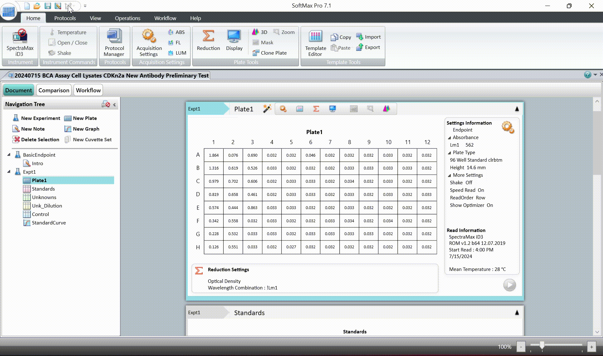
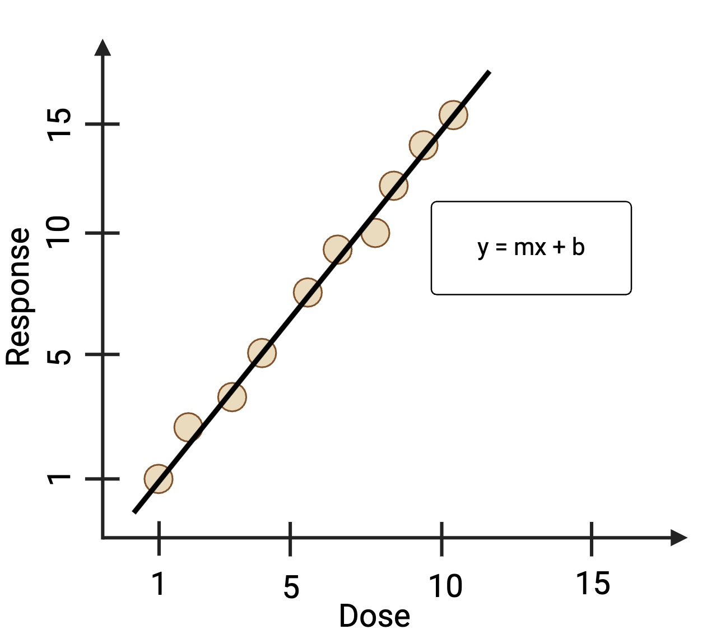
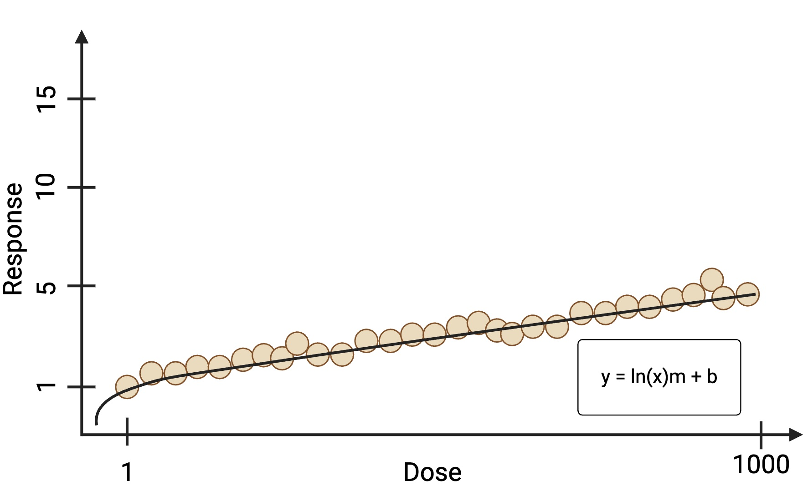
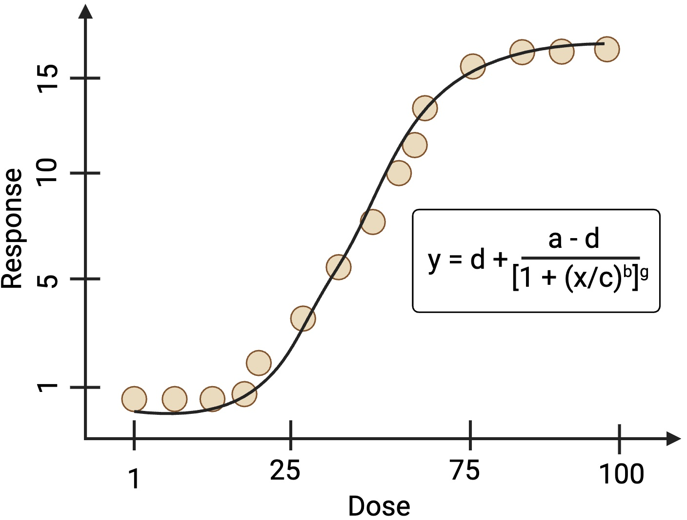
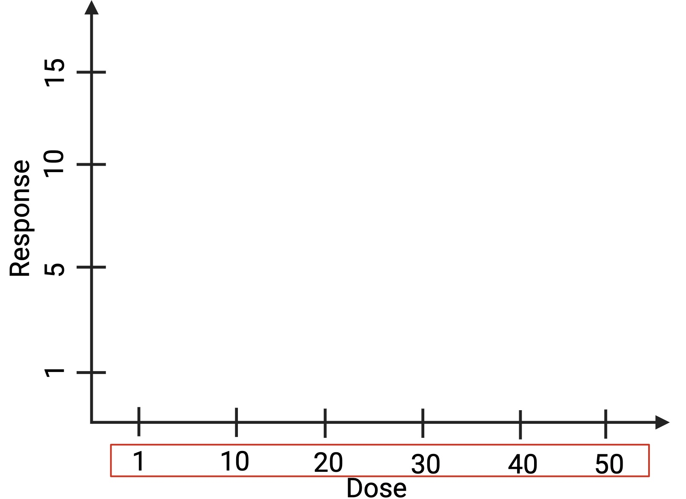
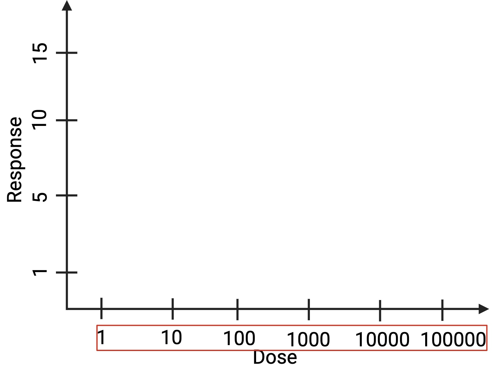
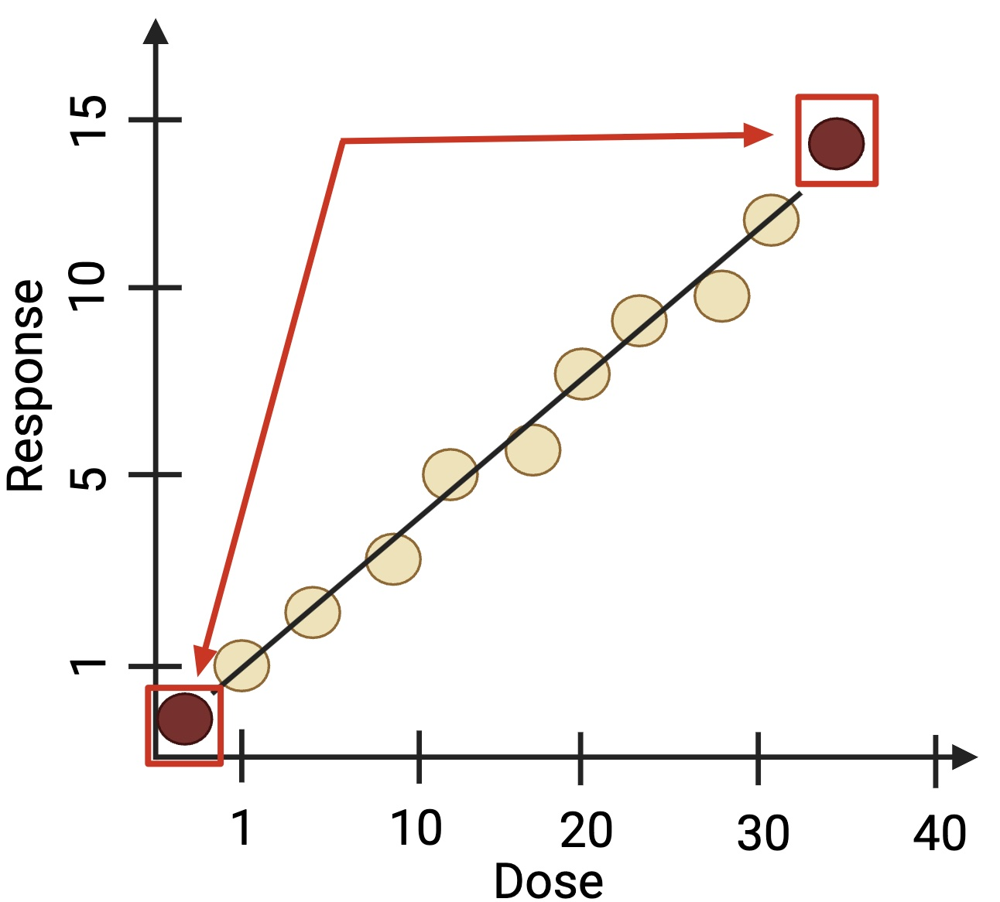

Most accurate when the dependent variable changes at a constant rate alongside the independent variable.

Most accurate when the dependent variable changes at a slow rate relative to the independent variable.

Accurate when data presents upper and lower asymptotes in a sigmodial shape.
Accurate when data presents upper and lower asymptotes in a sigmodial shape. When g = 1, reverts to 4PL.

X-axis is set assuming the x-values are close together.

X-axis is set assuming the x-values are far apart.

Removes the unknowns that are outside the standard curve.